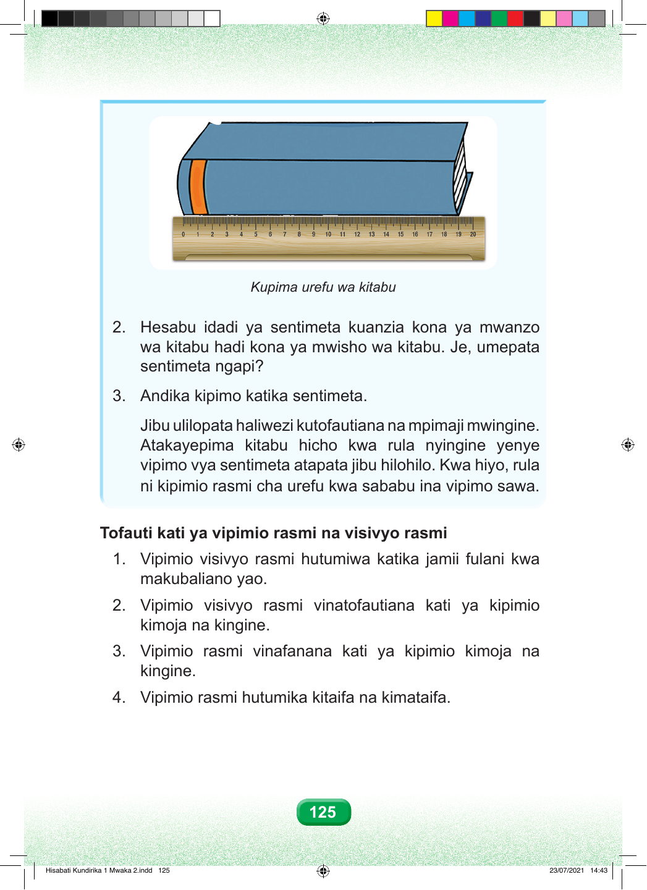

Kupima urefu wa kitabu 2. Hesabu idadi ya sentimeta kuanzia kona ya mwanzo wa kitabu hadi kona ya mwisho wa kitabu. Je, umepata sentimeta ngapi? 3. Andika kipimo katika sentimeta. Jibu ulilopata haliwezi kutofautiana na mpimaji mwingine. Atakayepima kitabu hicho kwa rula nyingine yenye vipimo vya sentimeta atapata jibu hilohilo. Kwa hiyo, rula ni kipimio rasmi cha urefu kwa sababu ina vipimo sawa. Tofauti kati ya vipimio rasmi na visivyo rasmi 1. Vipimio visivyo rasmi hutumiwa katika jamii fulani kwa makubaliano yao. 2. Vipimio visivyo rasmi vinatofautiana kati ya kipimio kimoja na kingine. 3. Vipimio rasmi vinafanana kati ya kipimio kimoja na kingine. 4. Vipimio rasmi hutumika kitaifa na kimataifa. 125 Hisabati Kundirika 1 Mwaka 2.indd 125 23/07/2021 14:43